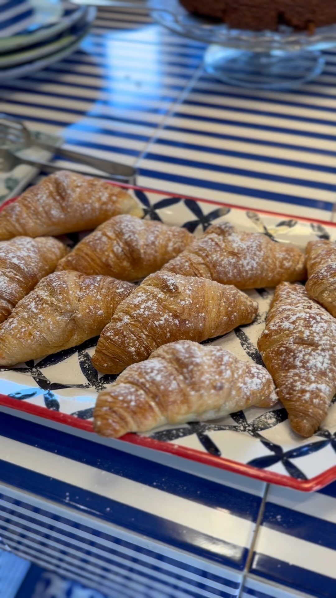
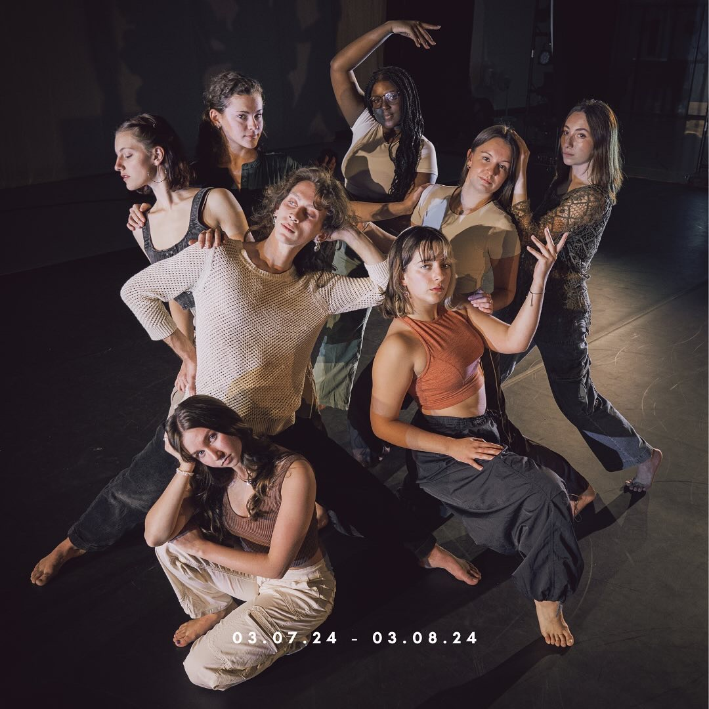

School
Internships and campus work during college

Maison Il Conservatorio
Social media and short-form video

UMass Dance Senior Thesis Concert
UMass Dance, University of Massachusetts Amherst · Event publicity and social media
UMass Amherst: Campus Engagement & Digital Storytelling
University of Massachusetts Amherst · Social media and video